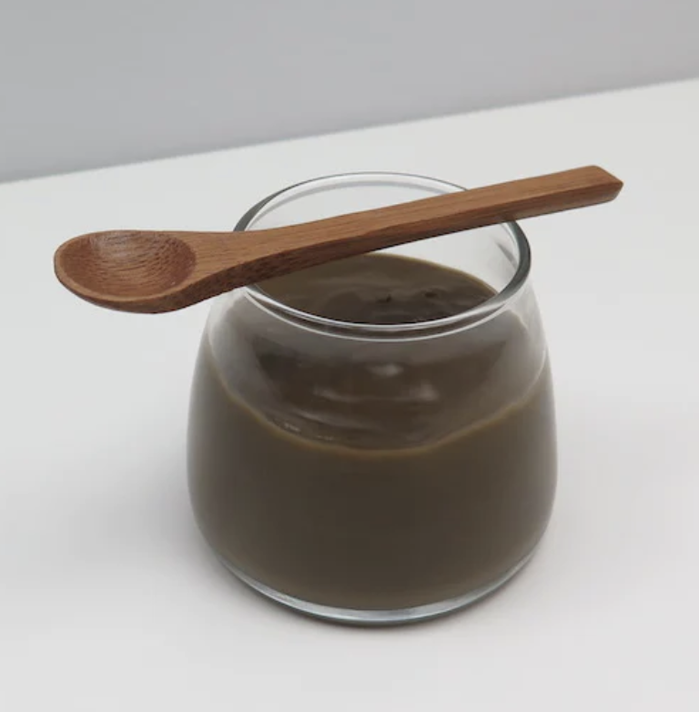

Use this recipe to make jiggly Hojicha pudding!
- 1.5 teaspoons Hojicha powder
- 1 tablespoon tapioca starch powder (60mL) 80°C water
- 1.5 tablespoons sugar
- pinch of salt
- 20mL cold water
- 100mL milk
- 1/4 tablespoon vanilla extact
- Add 1.5 teaspoons of hojicha powder, 1 tablespoon of tapioca powder starch, 1.5 of tablespoons sugar, and a pinch of salt into a small saucepan. Mix well until no white streaks remain.
- Add 20 ml of cold water, and mix until the dry ingredients are fully dissolved and form a thick paste.
- Add 100 ml of your choice of milk and stir well.
- Heat the mixture over medium heat, while stirring occasionally.
- As soon as the mixture begins to steam, lower the heat to medium low. Then stir continuously while making sure to scrape the bottom.
- Remove from heat right before the mixture reaches your desired firmness, as the pudding will continue to thicken as it cools.
- Stir in 1/4 teaspoon of vanilla extract
- Pour into a jar and refrigerate.
- Serve your hojicha pudding chilled or at room temperature.